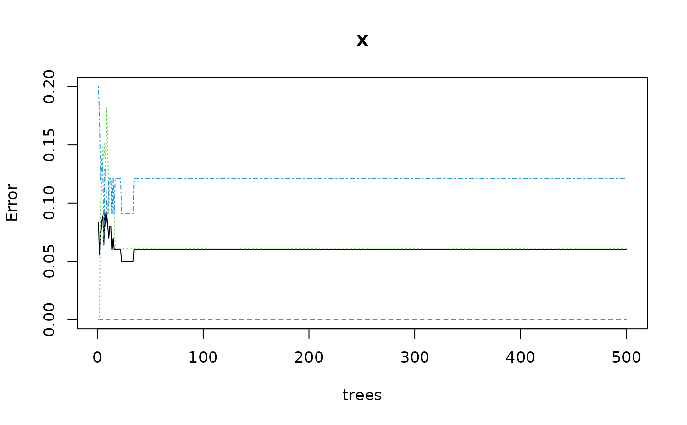

Machine learning model for (un)supervised classification or regression
Source:R/mlearning.R
mlearning.RdAn mlearning object provides an unified (formula-based) interface to
several machine learning algorithms. They share the same interface and very
similar arguments. They conform to the formula-based approach, of say,
stats::lm() in base R, but with a coherent handling of missing data and
missing class levels. An optimized version exists for the simplified y ~ .
formula. Finally, cross-validation is also built-in.
mlearning(
formula,
data,
method,
model.args,
call = match.call(),
...,
subset,
na.action = na.fail
)
# S3 method for class 'mlearning'
print(x, ...)
# S3 method for class 'mlearning'
summary(object, ...)
# S3 method for class 'summary.mlearning'
print(x, ...)
# S3 method for class 'mlearning'
plot(x, y, ...)
# S3 method for class 'mlearning'
predict(
object,
newdata,
type = c("class", "membership", "both"),
method = c("direct", "cv"),
na.action = na.exclude,
...
)
cvpredict(object, ...)
# S3 method for class 'mlearning'
cvpredict(
object,
type = c("class", "membership", "both"),
cv.k = 10,
cv.strat = TRUE,
...
)Arguments
- formula
a formula with left term being the factor variable to predict (for supervised classification), a vector of numbers (for regression) or nothing (for unsupervised classification) and the right term with the list of independent, predictive variables, separated with a plus sign. If the data frame provided contains only the dependent and independent variables, one can use the
class ~ .short version (that one is strongly encouraged). Variables with minus sign are eliminated. Calculations on variables are possible according to usual formula convention (possibly protected by usingI()). Supervised classification, regression or unsupervised classification are not available for all algorithms. Check respective help pages.- data
a data.frame to use as a training set.
- method
"direct"(default) or"cv"."direct"predicts new cases innewdata=if this argument is provided, or the cases in the training set if not. Take care that not providingnewdata=means that you just calculate the self-consistency of the classifier but cannot use the metrics derived from these results for the assessment of its performances. Either use a different dataset innewdata=or use the alternate cross-validation ("cv") technique. If you specifymethod = "cv"thencvpredict()is used and you cannot providenewdata=in that case. Other methods may be provided by the various algorithms (check their help pages)- model.args
arguments for formula modeling with substituted data and subset... Not to be used by the end-user.
- call
the function call. Not to be used by the end-user.
- ...
further arguments (depends on the method).
- subset
index vector with the cases to define the training set in use (this argument must be named, if provided).
- na.action
function to specify the action to be taken if
NAs are found. Forml_qda()na.failis used by default. The calculation is stopped if there is anyNAin the data. Another option isna.omit, where cases with missing values on any required variable are dropped (this argument must be named, if provided). For thepredict()method, the default, and most suitable option, isna.exclude. In that case, rows withNAs innewdata=are excluded from prediction, but reinjected in the final results so that the number of items is still the same (and in the same order asnewdata=).- x, object
an mlearning object
- y
a second mlearning object or nothing (not used in several plots)
- newdata
a new dataset with same conformation as the training set (same variables, except may by the class for classification or dependent variable for regression). Usually a test set, or a new dataset to be predicted.
- type
the type of prediction to return.
"class"by default, the predicted classes. Other options are"membership"the membership (a number between 0 and 1) to the different classes, or"both"to return classes and memberships. Other types may be provided for some algorithms (read respective help pages).- cv.k
k for k-fold cross-validation, cf
ipred::errorest(). By default, 10.- cv.strat
is the subsampling stratified or not in cross-validation, cf
ipred::errorest().TRUEby default.
Value
an mlearning object for mlearning(). Methods return their own
results that can be a mlearning, data.frame, vector, etc.
See also
ml_lda(), ml_qda(), ml_naive_bayes(), ml_nnet(),
ml_rpart(), ml_rforest(), ml_svm(), confusion() and prior(). Also
ipred::errorest() that internally computes the cross-validation
in cvpredict().
Examples
# mlearning() should not be calle directly. Use the mlXXX() functions instead
# for instance, for Random Forest, use ml_rforest()/mlRforest()
# A typical classification involves several steps:
#
# 1) Prepare data: split into training set (2/3) and test set (1/3)
# Data cleaning (elimination of unwanted variables), transformation of
# others (scaling, log, ratios, numeric to factor, ...) may be necessary
# here. Apply the same treatments on the training and test sets
data("iris", package = "datasets")
train <- c(1:34, 51:83, 101:133) # Also random or stratified sampling
iris_train <- iris[train, ]
iris_test <- iris[-train, ]
# 2) Train the classifier, use of the simplified formula class ~ . encouraged
# so, you may have to prepare the train/test sets to keep only relevant
# variables and to possibly transform them before use
iris_rf <- ml_rforest(data = iris_train, Species ~ .)
iris_rf
#> A mlearning object of class mlRforest (random forest):
#> Call: mlRforest.formula(formula = Species ~ ., data = iris_train)
#> Trained using 100 cases:
#> setosa versicolor virginica
#> 34 33 33
summary(iris_rf)
#> A mlearning object of class mlRforest (random forest):
#> Initial call: mlRforest.formula(formula = Species ~ ., data = iris_train)
#>
#> Call:
#> randomForest(x = train, y = response, ntree = ntree, replace = replace, classwt = classwt, .args. = ..1)
#> Type of random forest: classification
#> Number of trees: 500
#> No. of variables tried at each split: 2
#>
#> OOB estimate of error rate: 6%
#> Confusion matrix:
#> setosa versicolor virginica class.error
#> setosa 34 0 0 0.00000000
#> versicolor 0 31 2 0.06060606
#> virginica 0 4 29 0.12121212
train(iris_rf)
#> Sepal.Length Sepal.Width Petal.Length Petal.Width
#> 1 5.1 3.5 1.4 0.2
#> 2 4.9 3.0 1.4 0.2
#> 3 4.7 3.2 1.3 0.2
#> 4 4.6 3.1 1.5 0.2
#> 5 5.0 3.6 1.4 0.2
#> 6 5.4 3.9 1.7 0.4
#> 7 4.6 3.4 1.4 0.3
#> 8 5.0 3.4 1.5 0.2
#> 9 4.4 2.9 1.4 0.2
#> 10 4.9 3.1 1.5 0.1
#> 11 5.4 3.7 1.5 0.2
#> 12 4.8 3.4 1.6 0.2
#> 13 4.8 3.0 1.4 0.1
#> 14 4.3 3.0 1.1 0.1
#> 15 5.8 4.0 1.2 0.2
#> 16 5.7 4.4 1.5 0.4
#> 17 5.4 3.9 1.3 0.4
#> 18 5.1 3.5 1.4 0.3
#> 19 5.7 3.8 1.7 0.3
#> 20 5.1 3.8 1.5 0.3
#> 21 5.4 3.4 1.7 0.2
#> 22 5.1 3.7 1.5 0.4
#> 23 4.6 3.6 1.0 0.2
#> 24 5.1 3.3 1.7 0.5
#> 25 4.8 3.4 1.9 0.2
#> 26 5.0 3.0 1.6 0.2
#> 27 5.0 3.4 1.6 0.4
#> 28 5.2 3.5 1.5 0.2
#> 29 5.2 3.4 1.4 0.2
#> 30 4.7 3.2 1.6 0.2
#> 31 4.8 3.1 1.6 0.2
#> 32 5.4 3.4 1.5 0.4
#> 33 5.2 4.1 1.5 0.1
#> 34 5.5 4.2 1.4 0.2
#> 51 7.0 3.2 4.7 1.4
#> 52 6.4 3.2 4.5 1.5
#> 53 6.9 3.1 4.9 1.5
#> 54 5.5 2.3 4.0 1.3
#> 55 6.5 2.8 4.6 1.5
#> 56 5.7 2.8 4.5 1.3
#> 57 6.3 3.3 4.7 1.6
#> 58 4.9 2.4 3.3 1.0
#> 59 6.6 2.9 4.6 1.3
#> 60 5.2 2.7 3.9 1.4
#> 61 5.0 2.0 3.5 1.0
#> 62 5.9 3.0 4.2 1.5
#> 63 6.0 2.2 4.0 1.0
#> 64 6.1 2.9 4.7 1.4
#> 65 5.6 2.9 3.6 1.3
#> 66 6.7 3.1 4.4 1.4
#> 67 5.6 3.0 4.5 1.5
#> 68 5.8 2.7 4.1 1.0
#> 69 6.2 2.2 4.5 1.5
#> 70 5.6 2.5 3.9 1.1
#> 71 5.9 3.2 4.8 1.8
#> 72 6.1 2.8 4.0 1.3
#> 73 6.3 2.5 4.9 1.5
#> 74 6.1 2.8 4.7 1.2
#> 75 6.4 2.9 4.3 1.3
#> 76 6.6 3.0 4.4 1.4
#> 77 6.8 2.8 4.8 1.4
#> 78 6.7 3.0 5.0 1.7
#> 79 6.0 2.9 4.5 1.5
#> 80 5.7 2.6 3.5 1.0
#> 81 5.5 2.4 3.8 1.1
#> 82 5.5 2.4 3.7 1.0
#> 83 5.8 2.7 3.9 1.2
#> 101 6.3 3.3 6.0 2.5
#> 102 5.8 2.7 5.1 1.9
#> 103 7.1 3.0 5.9 2.1
#> 104 6.3 2.9 5.6 1.8
#> 105 6.5 3.0 5.8 2.2
#> 106 7.6 3.0 6.6 2.1
#> 107 4.9 2.5 4.5 1.7
#> 108 7.3 2.9 6.3 1.8
#> 109 6.7 2.5 5.8 1.8
#> 110 7.2 3.6 6.1 2.5
#> 111 6.5 3.2 5.1 2.0
#> 112 6.4 2.7 5.3 1.9
#> 113 6.8 3.0 5.5 2.1
#> 114 5.7 2.5 5.0 2.0
#> 115 5.8 2.8 5.1 2.4
#> 116 6.4 3.2 5.3 2.3
#> 117 6.5 3.0 5.5 1.8
#> 118 7.7 3.8 6.7 2.2
#> 119 7.7 2.6 6.9 2.3
#> 120 6.0 2.2 5.0 1.5
#> 121 6.9 3.2 5.7 2.3
#> 122 5.6 2.8 4.9 2.0
#> 123 7.7 2.8 6.7 2.0
#> 124 6.3 2.7 4.9 1.8
#> 125 6.7 3.3 5.7 2.1
#> 126 7.2 3.2 6.0 1.8
#> 127 6.2 2.8 4.8 1.8
#> 128 6.1 3.0 4.9 1.8
#> 129 6.4 2.8 5.6 2.1
#> 130 7.2 3.0 5.8 1.6
#> 131 7.4 2.8 6.1 1.9
#> 132 7.9 3.8 6.4 2.0
#> 133 6.4 2.8 5.6 2.2
response(iris_rf)
#> [1] setosa setosa setosa setosa setosa setosa
#> [7] setosa setosa setosa setosa setosa setosa
#> [13] setosa setosa setosa setosa setosa setosa
#> [19] setosa setosa setosa setosa setosa setosa
#> [25] setosa setosa setosa setosa setosa setosa
#> [31] setosa setosa setosa setosa versicolor versicolor
#> [37] versicolor versicolor versicolor versicolor versicolor versicolor
#> [43] versicolor versicolor versicolor versicolor versicolor versicolor
#> [49] versicolor versicolor versicolor versicolor versicolor versicolor
#> [55] versicolor versicolor versicolor versicolor versicolor versicolor
#> [61] versicolor versicolor versicolor versicolor versicolor versicolor
#> [67] versicolor virginica virginica virginica virginica virginica
#> [73] virginica virginica virginica virginica virginica virginica
#> [79] virginica virginica virginica virginica virginica virginica
#> [85] virginica virginica virginica virginica virginica virginica
#> [91] virginica virginica virginica virginica virginica virginica
#> [97] virginica virginica virginica virginica
#> Levels: setosa versicolor virginica
# 3) Find optimal values for the parameters of the model
# This is usally done iteratively. Just an example with ntree where a plot
# exists to help finding optimal value
plot(iris_rf)

# For such a relatively simple case, 50 trees are enough, retrain with it
iris_rf <- ml_rforest(data = iris_train, Species ~ ., ntree = 50)
summary(iris_rf)
#> A mlearning object of class mlRforest (random forest):
#> Initial call: mlRforest.formula(formula = Species ~ ., data = iris_train, ntree = 50)
#>
#> Call:
#> randomForest(x = train, y = response, ntree = ntree, replace = replace, classwt = classwt, .args. = ..1)
#> Type of random forest: classification
#> Number of trees: 50
#> No. of variables tried at each split: 2
#>
#> OOB estimate of error rate: 6%
#> Confusion matrix:
#> setosa versicolor virginica class.error
#> setosa 34 0 0 0.00000000
#> versicolor 0 31 2 0.06060606
#> virginica 0 4 29 0.12121212
# 4) Study the classifier performances. Several metrics and tools exists
# like ROC curves, AUC, etc. Tools provided here are the confusion matrix
# and the metrics that are calculated on it.
predict(iris_rf) # Default type is class
#> [1] setosa setosa setosa setosa setosa setosa
#> [7] setosa setosa setosa setosa setosa setosa
#> [13] setosa setosa setosa setosa setosa setosa
#> [19] setosa setosa setosa setosa setosa setosa
#> [25] setosa setosa setosa setosa setosa setosa
#> [31] setosa setosa setosa setosa versicolor versicolor
#> [37] versicolor versicolor versicolor versicolor versicolor versicolor
#> [43] versicolor versicolor versicolor versicolor versicolor versicolor
#> [49] versicolor versicolor versicolor versicolor versicolor versicolor
#> [55] versicolor versicolor versicolor versicolor versicolor versicolor
#> [61] versicolor versicolor versicolor versicolor versicolor versicolor
#> [67] versicolor virginica virginica virginica virginica virginica
#> [73] virginica virginica virginica virginica virginica virginica
#> [79] virginica virginica virginica virginica virginica virginica
#> [85] virginica virginica virginica virginica virginica virginica
#> [91] virginica virginica virginica virginica virginica virginica
#> [97] virginica virginica virginica virginica
#> Levels: setosa versicolor virginica
predict(iris_rf, type = "membership")
#> setosa versicolor virginica
#> 1 1.00 0.00 0.00
#> 2 1.00 0.00 0.00
#> 3 1.00 0.00 0.00
#> 4 1.00 0.00 0.00
#> 5 1.00 0.00 0.00
#> 6 1.00 0.00 0.00
#> 7 1.00 0.00 0.00
#> 8 1.00 0.00 0.00
#> 9 1.00 0.00 0.00
#> 10 1.00 0.00 0.00
#> 11 1.00 0.00 0.00
#> 12 1.00 0.00 0.00
#> 13 1.00 0.00 0.00
#> 14 1.00 0.00 0.00
#> 15 0.94 0.06 0.00
#> 16 0.94 0.06 0.00
#> 17 1.00 0.00 0.00
#> 18 1.00 0.00 0.00
#> 19 0.94 0.06 0.00
#> 20 1.00 0.00 0.00
#> 21 1.00 0.00 0.00
#> 22 1.00 0.00 0.00
#> 23 1.00 0.00 0.00
#> 24 1.00 0.00 0.00
#> 25 1.00 0.00 0.00
#> 26 1.00 0.00 0.00
#> 27 1.00 0.00 0.00
#> 28 1.00 0.00 0.00
#> 29 1.00 0.00 0.00
#> 30 1.00 0.00 0.00
#> 31 1.00 0.00 0.00
#> 32 1.00 0.00 0.00
#> 33 1.00 0.00 0.00
#> 34 0.94 0.06 0.00
#> 51 0.00 0.98 0.02
#> 52 0.00 1.00 0.00
#> 53 0.00 0.94 0.06
#> 54 0.00 0.98 0.02
#> 55 0.00 1.00 0.00
#> 56 0.00 1.00 0.00
#> 57 0.00 0.94 0.06
#> 58 0.00 0.94 0.06
#> 59 0.00 1.00 0.00
#> 60 0.00 0.96 0.04
#> 61 0.00 0.96 0.04
#> 62 0.00 1.00 0.00
#> 63 0.00 0.96 0.04
#> 64 0.00 1.00 0.00
#> 65 0.00 1.00 0.00
#> 66 0.00 1.00 0.00
#> 67 0.00 1.00 0.00
#> 68 0.00 1.00 0.00
#> 69 0.00 0.96 0.04
#> 70 0.00 1.00 0.00
#> 71 0.00 0.72 0.28
#> 72 0.00 1.00 0.00
#> 73 0.00 0.82 0.18
#> 74 0.00 1.00 0.00
#> 75 0.00 1.00 0.00
#> 76 0.00 1.00 0.00
#> 77 0.00 0.96 0.04
#> 78 0.00 0.62 0.38
#> 79 0.00 1.00 0.00
#> 80 0.00 1.00 0.00
#> 81 0.00 1.00 0.00
#> 82 0.00 1.00 0.00
#> 83 0.00 1.00 0.00
#> 101 0.00 0.00 1.00
#> 102 0.00 0.02 0.98
#> 103 0.00 0.00 1.00
#> 104 0.00 0.00 1.00
#> 105 0.00 0.00 1.00
#> 106 0.00 0.00 1.00
#> 107 0.00 0.42 0.58
#> 108 0.00 0.00 1.00
#> 109 0.00 0.00 1.00
#> 110 0.00 0.00 1.00
#> 111 0.00 0.00 1.00
#> 112 0.00 0.00 1.00
#> 113 0.00 0.00 1.00
#> 114 0.00 0.02 0.98
#> 115 0.00 0.02 0.98
#> 116 0.00 0.00 1.00
#> 117 0.00 0.00 1.00
#> 118 0.00 0.00 1.00
#> 119 0.00 0.00 1.00
#> 120 0.00 0.36 0.64
#> 121 0.00 0.02 0.98
#> 122 0.00 0.06 0.94
#> 123 0.00 0.00 1.00
#> 124 0.00 0.04 0.96
#> 125 0.00 0.00 1.00
#> 126 0.00 0.00 1.00
#> 127 0.00 0.20 0.80
#> 128 0.00 0.10 0.90
#> 129 0.00 0.00 1.00
#> 130 0.00 0.20 0.80
#> 131 0.00 0.00 1.00
#> 132 0.00 0.00 1.00
#> 133 0.00 0.00 1.00
predict(iris_rf, type = "both")
#> $class
#> [1] setosa setosa setosa setosa setosa setosa
#> [7] setosa setosa setosa setosa setosa setosa
#> [13] setosa setosa setosa setosa setosa setosa
#> [19] setosa setosa setosa setosa setosa setosa
#> [25] setosa setosa setosa setosa setosa setosa
#> [31] setosa setosa setosa setosa versicolor versicolor
#> [37] versicolor versicolor versicolor versicolor versicolor versicolor
#> [43] versicolor versicolor versicolor versicolor versicolor versicolor
#> [49] versicolor versicolor versicolor versicolor versicolor versicolor
#> [55] versicolor versicolor versicolor versicolor versicolor versicolor
#> [61] versicolor versicolor versicolor versicolor versicolor versicolor
#> [67] versicolor virginica virginica virginica virginica virginica
#> [73] virginica virginica virginica virginica virginica virginica
#> [79] virginica virginica virginica virginica virginica virginica
#> [85] virginica virginica virginica virginica virginica virginica
#> [91] virginica virginica virginica virginica virginica virginica
#> [97] virginica virginica virginica virginica
#> Levels: setosa versicolor virginica
#>
#> $membership
#> setosa versicolor virginica
#> 1 1.00 0.00 0.00
#> 2 1.00 0.00 0.00
#> 3 1.00 0.00 0.00
#> 4 1.00 0.00 0.00
#> 5 1.00 0.00 0.00
#> 6 1.00 0.00 0.00
#> 7 1.00 0.00 0.00
#> 8 1.00 0.00 0.00
#> 9 1.00 0.00 0.00
#> 10 1.00 0.00 0.00
#> 11 1.00 0.00 0.00
#> 12 1.00 0.00 0.00
#> 13 1.00 0.00 0.00
#> 14 1.00 0.00 0.00
#> 15 0.94 0.06 0.00
#> 16 0.94 0.06 0.00
#> 17 1.00 0.00 0.00
#> 18 1.00 0.00 0.00
#> 19 0.94 0.06 0.00
#> 20 1.00 0.00 0.00
#> 21 1.00 0.00 0.00
#> 22 1.00 0.00 0.00
#> 23 1.00 0.00 0.00
#> 24 1.00 0.00 0.00
#> 25 1.00 0.00 0.00
#> 26 1.00 0.00 0.00
#> 27 1.00 0.00 0.00
#> 28 1.00 0.00 0.00
#> 29 1.00 0.00 0.00
#> 30 1.00 0.00 0.00
#> 31 1.00 0.00 0.00
#> 32 1.00 0.00 0.00
#> 33 1.00 0.00 0.00
#> 34 0.94 0.06 0.00
#> 51 0.00 0.98 0.02
#> 52 0.00 1.00 0.00
#> 53 0.00 0.94 0.06
#> 54 0.00 0.98 0.02
#> 55 0.00 1.00 0.00
#> 56 0.00 1.00 0.00
#> 57 0.00 0.94 0.06
#> 58 0.00 0.94 0.06
#> 59 0.00 1.00 0.00
#> 60 0.00 0.96 0.04
#> 61 0.00 0.96 0.04
#> 62 0.00 1.00 0.00
#> 63 0.00 0.96 0.04
#> 64 0.00 1.00 0.00
#> 65 0.00 1.00 0.00
#> 66 0.00 1.00 0.00
#> 67 0.00 1.00 0.00
#> 68 0.00 1.00 0.00
#> 69 0.00 0.96 0.04
#> 70 0.00 1.00 0.00
#> 71 0.00 0.72 0.28
#> 72 0.00 1.00 0.00
#> 73 0.00 0.82 0.18
#> 74 0.00 1.00 0.00
#> 75 0.00 1.00 0.00
#> 76 0.00 1.00 0.00
#> 77 0.00 0.96 0.04
#> 78 0.00 0.62 0.38
#> 79 0.00 1.00 0.00
#> 80 0.00 1.00 0.00
#> 81 0.00 1.00 0.00
#> 82 0.00 1.00 0.00
#> 83 0.00 1.00 0.00
#> 101 0.00 0.00 1.00
#> 102 0.00 0.02 0.98
#> 103 0.00 0.00 1.00
#> 104 0.00 0.00 1.00
#> 105 0.00 0.00 1.00
#> 106 0.00 0.00 1.00
#> 107 0.00 0.42 0.58
#> 108 0.00 0.00 1.00
#> 109 0.00 0.00 1.00
#> 110 0.00 0.00 1.00
#> 111 0.00 0.00 1.00
#> 112 0.00 0.00 1.00
#> 113 0.00 0.00 1.00
#> 114 0.00 0.02 0.98
#> 115 0.00 0.02 0.98
#> 116 0.00 0.00 1.00
#> 117 0.00 0.00 1.00
#> 118 0.00 0.00 1.00
#> 119 0.00 0.00 1.00
#> 120 0.00 0.36 0.64
#> 121 0.00 0.02 0.98
#> 122 0.00 0.06 0.94
#> 123 0.00 0.00 1.00
#> 124 0.00 0.04 0.96
#> 125 0.00 0.00 1.00
#> 126 0.00 0.00 1.00
#> 127 0.00 0.20 0.80
#> 128 0.00 0.10 0.90
#> 129 0.00 0.00 1.00
#> 130 0.00 0.20 0.80
#> 131 0.00 0.00 1.00
#> 132 0.00 0.00 1.00
#> 133 0.00 0.00 1.00
#>
# Confusion matrice and metrics using 10-fols cross-validation
iris_rf_conf <- confusion(iris_rf, method = "cv")
iris_rf_conf
#> 100 items classified with 95 true positives (error rate = 5%)
#> Predicted
#> Actual 01 02 03 (sum) (FNR%)
#> 01 setosa 34 0 0 34 0
#> 02 versicolor 0 31 2 33 6
#> 03 virginica 0 3 30 33 9
#> (sum) 34 34 32 100 5
summary(iris_rf_conf)
#> 100 items classified with 95 true positives (error = 5%)
#>
#> Global statistics on reweighted data:
#> Error rate: 5%, F(micro-average): 0.95, F(macro-average): 0.949
#>
#> Fscore Recall Precision Specificity NPV FPR
#> setosa 1.0000000 1.0000000 1.0000000 1.0000000 1.0000000 0.00000000
#> versicolor 0.9253731 0.9393939 0.9117647 0.9552239 0.9696970 0.04477612
#> virginica 0.9230769 0.9090909 0.9375000 0.9701493 0.9558824 0.02985075
#> FNR FDR FOR LRPT LRNT LRPS
#> setosa 0.00000000 0.00000000 0.00000000 Inf 0.00000000 Inf
#> versicolor 0.06060606 0.08823529 0.03030303 20.97980 0.06344697 30.08824
#> virginica 0.09090909 0.06250000 0.04411765 30.45455 0.09370629 21.25000
#> LRNS BalAcc MCC Chisq Bray Auto Manu A_M TP FP
#> setosa 0.00000000 1.0000000 1.0000000 100.00000 0.000 34 34 0 34 0
#> versicolor 0.09099265 0.9473089 0.8880154 78.85713 0.005 34 33 1 31 3
#> virginica 0.06538462 0.9396201 0.8862831 78.54976 0.005 32 33 -1 30 2
#> FN TN
#> setosa 0 66
#> versicolor 2 64
#> virginica 3 65
# Note you may want to manipulate priors too, see ?prior
# 5) Go back to step #1 and refine the process until you are happy with the
# results. Then, you can use the classifier to predict unknown items.